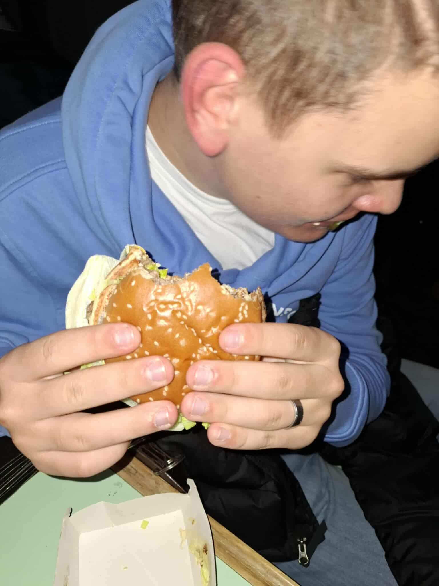
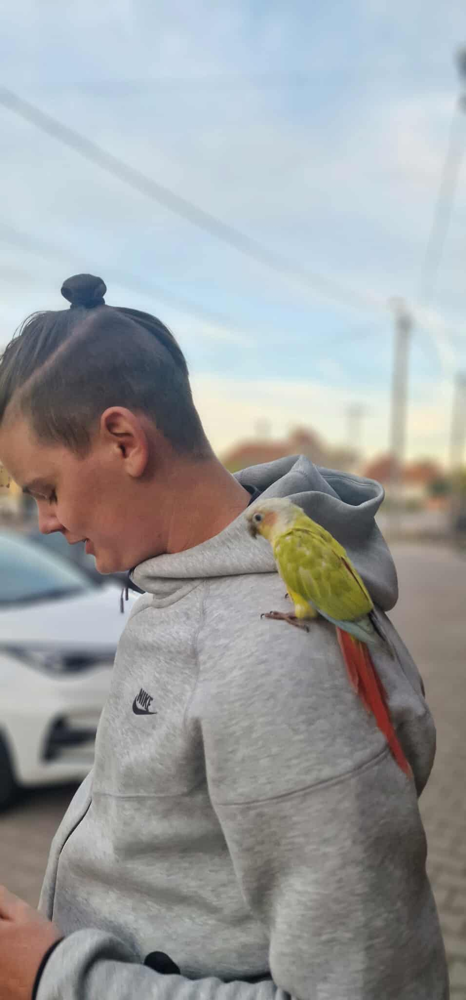
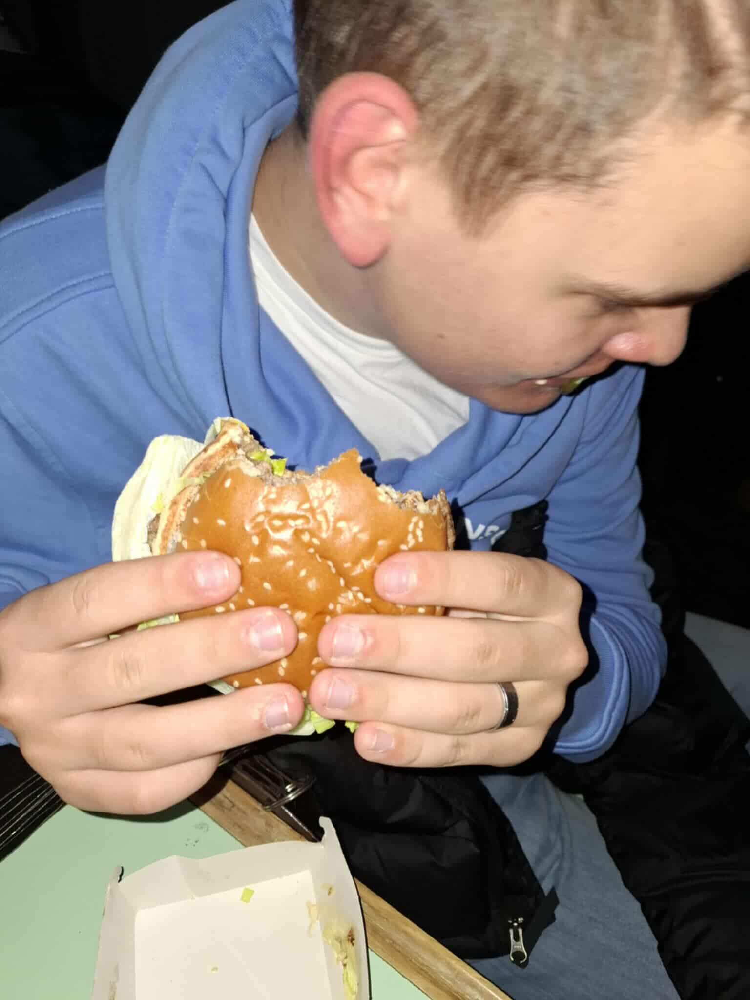
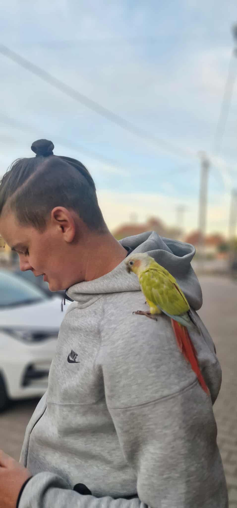

|
Személyes adatokNév: Kiss DávidNem: Férfi Születési hely: KTM Szalon Születési idő: 1989 Állampolgárság: Turai Kedvenc zenéje: |
Története:Kiss Dávid – vagy ahogy a motorosok titkos körökben nevezik: „A Férfi, Aki Még A Földre Esést Is Relaxációs Technikának Használja” – már az első pillanattól fogva tudta, hogy a motorozás nem hobbi… hanem életstílus, túlélőtúra és időnként meditációs módszer is. Születési hely: KTM Szelence A legenda szerint Dávidet nem kórházban szülték, hanem egy KTM szalonban szerelelték össze. A szerelők állítólag még most is mesélik, hogy amikor először beindították, nem sírt – csak finoman hörgött, mint egy kétütemű 250-es. A 1989-es gyártási év Mint minden jó gép, ő is pont abban az évben „készült”, amikor még a világ is strapabíróbb volt. A családi történetek szerint a bölcsője is keréknyomokat hagyott maga után. A nagy erdei chill A képen látható, ahogy Dávid fekszik a motorja mellett az erdőben, teljes békében, mintha épp csak szünetet tartana a karmagyakorlásban. A helyiek szerint ez Dávid egyik különleges technikája: „Ha eldől a motor, feküdj mellé, így kevésbé ciki.” Valójában ez az „erdőfekvős” póz a Motoros Jóga 4. szintje, amit csak a kiválasztottak tudnak elsajátítani. Turai állampolgárság – és büszkén az Dávid nemcsak a motorok királya Turán, hanem hivatalosan is „királyi lakos”. Tura lakói büszkék rá, mert ő az egyetlen, aki képes úgy elesni motorral, hogy közben végig nyugodtabbnak tűnik, mint aki délután szunyókálni készül. Különleges képesség: Étkezés turbó módban A mellékelt miniképek alapján Dávid egy másik képessége is ismert: hihetetlen sebességgel képes hamburgert fogyasztani. A tudósok ezt „turai tápanyagbevitelnek” nevezik, mások szerint egyszerűen éhes volt. A motor–madár–alvás háromszög Az egyik képen békésen alszik. A másikon egy madár ül rajta, mintha ő lenne a turai Snow White. A harmadikon újra a motor mellett pihen. Ez a három kép tökéletesen összefoglalja Dávid életének állandó körforgását: Alvás → Étkezés → Motorozás → Pihenés a földön → Ismétlés. Kedvenc zenéje A dokumentumban üresen hagyták, valószínűleg azért, mert Dávid a motorhangra esküszik. Ha mégis zenét hallgat, az is valószínűleg úgy szól, mintha egy kipufogó komponálta volna. |
Kapcsolódó körözésekTanár bosszantása – Btk. 420.§Órai rendbontás – Btk. 666.§ |